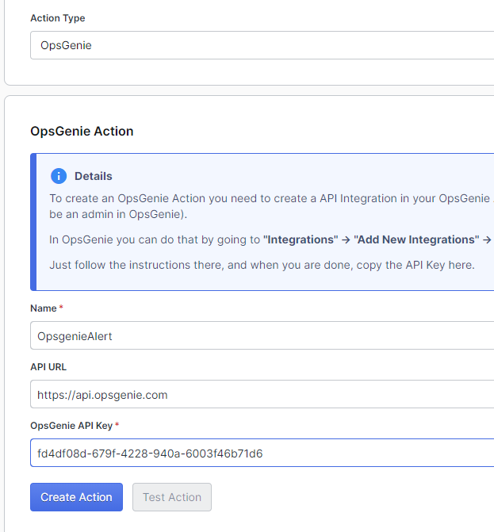
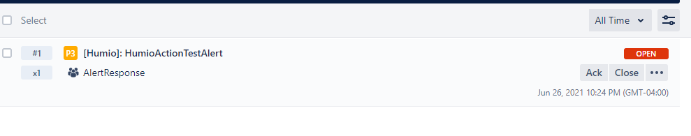
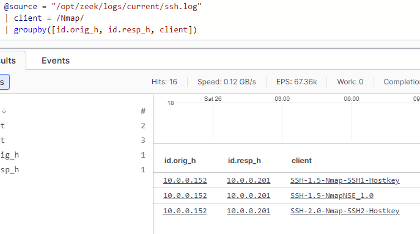
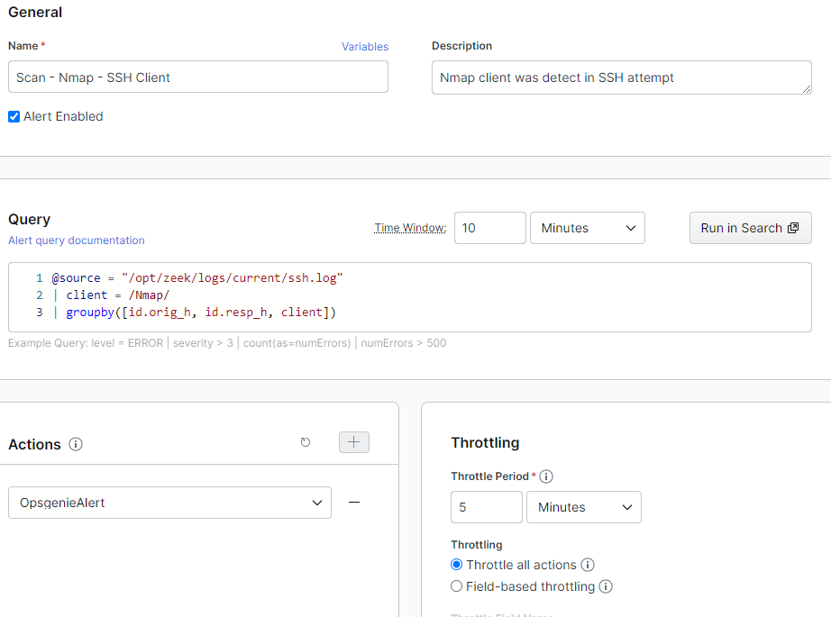
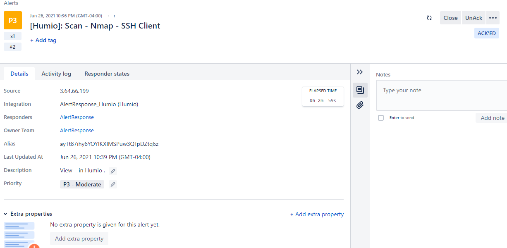
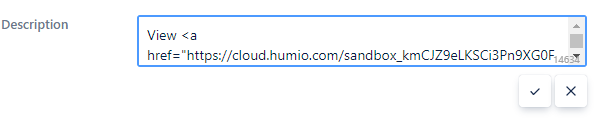

Alerting with Humio and Opsgenie
Alerting with Humio and Opsgenie
• Alerting in Humio starts with having an Action
• Alerts can be created with queries and the query results are turned into an alert, if results are found when the query is ran
• An alert is made up of:
◇ Name - alert name
◇ Description - alert description
◇ Query - Query that will trigger the alert if something is returned
◇ Time Window - how much data to search
◇ Actions - what to do with the alert
◇ Throttling - Throttle Period - how often to run the query
Creation a Humio Action based on instructions from Opsgenie Integration page
Test Action can be used to test the alert
Adding an alert to detect an nmap scan
Query:
@source = "/opt/zeek/logs/current/ssh.log"
| client = /Nmap/
| groupby([id.orig_h, id.resp_h, client])
Adding an Alert:
Alert in Opsgenie:

Description is supposed to have a link but at the time of writing this, it doesn't appear to render
